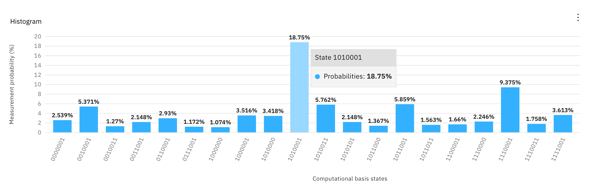
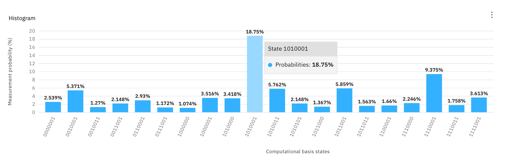

QR code Generator
The QR code system was invented in 1994 by Masahiro Hara from the Japanese company Denso Wave.[3] The initial design was influenced by the black and white pieces on a Go board.[4] Its purpose was to track vehicles during manufacturing; it was designed to allow high-speed component scanning, known as CP 1919. The signal was significant for many reasons, including being thought to be an extraterrestrial beacon. But for me, the significance of the CP 1919 is its eventual use in the album artwork for Joy Division's Unknown Pleasures. It is one of the most beautiful and recognizable visual adaptations of scientific data.
To honor that legacy, you can create a similar image by typing in the box below, but instead of using pulsar data, it uses data from a quantum computer.
To honor that legacy, you can create a similar image by typing in the box below, but instead of using pulsar data, it uses data from a quantum computer.
Image of Peter Saville's design for Joy Division's Unknown Pleasures album artwork.
Type any text (limited to letters)
Character not supported
Project Summary
The above demo creates an image with a quantum computer. Even better, the image is a word written by a quantum computer. Each line shows the amplitude of the binary representation of a letter of as an output of the Bernstein-Vazirani algorithm.
Didn't understand that sentence? That's okay. Let's break it down and get into some details.
First, let's talk about how quantum computers work a little bit. I'm going to skip some of the fundamentals, as its been said many times by people much more knowledgeable than myself, like this video.
For our purposes here, the important part is that unlike regular (or classical) computers, quantum computers use the effects of interference, a behavior only found in quantum physics, to get to a right answer in less steps. These computers are manipulating really delicate states which have lots of errors and may not get the right answer all the time, so we run an algorithm over and over to amplify the right answer. For example, a typical result from a quantum computer looks something like this. Whatever the quantum computer was trying to compute, we can see that the right answer is that tall column in the middle. All those other little bars in our histogram are a result noise. Today's quantum computers aren't perfect, so there will be noise in our results, but in this case, our correct answer is still fairly clear. For the sake of creating a visualization, I think the noise is beautiful and adds to the final effect. Once quantum computers are fully fault tolerant, this visualization will be a lot more boring. For once, the noise is a good thing.
Whatever the quantum computer was trying to compute, we can see that the right answer is that tall column in the middle. All those other little bars in our histogram are a result noise. Today's quantum computers aren't perfect, so there will be noise in our results, but in this case, our correct answer is still fairly clear. For the sake of creating a visualization, I think the noise is beautiful and adds to the final effect. Once quantum computers are fully fault tolerant, this visualization will be a lot more boring. For once, the noise is a good thing.
So what is it calculating, and what is the answer? Let's add some more data to our histogram.  As you can see, each bar is labeled with a series of 0s and 1s. These are 7 bit binary strings, and our amplified answer is "1010001", which is binary for the letter "Q". This means that our quantum computer is amplifying the letter Q, the first letter of Qiskit, which is exactly what we want! (For those really paying attention, text to binary is often written as 8 bits, starting with a 0 or 0b, but more on that later in the FAQs).
From here, I exported the data as a .csv file and styled it to look like a line from the famous album artwork using Apple Numbers and Adobe Illustrator. The amplitudes may look slightly different because the below image uses all the data provided by the quantum computer, while the above is just a summary That's where the Bernstein-Vazirani algorithm comes in, which you can read all about it in depth here. Or instead, here is a quick summary: There is a function that behaves in a particular way that depends on some unknown string of binary (0's and 1's), called an oracle. We encode the letters by first converting them to binary and then putting them into the oracle with quantum logic gates. We then ask the quantum computer to find the value of the oracle as a quantum state, which we can measure. Because of the noise associated with current quantum computers, we run the algorithm multiple times to see how the function operates in order to figure out what oracle is driving the function's behavior, giving us our amplitudes as shown above.
To do a full word (or sentence), the same algorithm will need to be run for each letter. This is every letter you type adds another line. I pre-ran every letter of the alphabet (both capital letters and lowercase, which are different at the binary level) so you can play with it and create your own Joy Division style quantum computing encoded message visualizations.
That's basically it! I certainly skimmed over some details, but the entire Jupyter notebook with the Qiskit code can be found here, which builds upon the Qiskit implementation as described in the Qiskit textbook here. The source code for the web app is in the same repo here. The primary difference from what is shown in the notebook is that you can enter a string of text, and it will return an array of circuits, corresponding to each letter. The array of circuits can be run all at once with Qiskit as one job, so give it a try!
And if you haven't picked up on it yet, I'm calling this "Joy Vazirani" because it styles the data output by the Bernstein-Vazirani algorithm to look like the Joy Division artwork.
For one last example, here is a mock up on a shirt that reads "qiskit terra aqua aer ignis" without spaces. In the example above, the circuits were run on "ibmq-paris", which the qubit connectivity looks like the following: When the circuit for "Q" was transpiled for this hardware, it looks like this:
When the circuit for "Q" was transpiled for this hardware, it looks like this:
 However, when the circuit for "k" was run, it was transpiled to look like this:
However, when the circuit for "k" was run, it was transpiled to look like this:
 The second circuit is a fair bit longer (or as we say, has a greater depth), which makes it more difficult to maintain accuracy. The longer (in depth) a circuit is, the longer (in time) it takes to execute, which means more opportunity for noise to get into the system. Each letter looks a little different, so some letters will be less accurate than others.
The second circuit is a fair bit longer (or as we say, has a greater depth), which makes it more difficult to maintain accuracy. The longer (in depth) a circuit is, the longer (in time) it takes to execute, which means more opportunity for noise to get into the system. Each letter looks a little different, so some letters will be less accurate than others.
To me, a quantum computer is a paintbrush. It's might be the worlds most complex paintbrush, but I hope this is the beginning of a learning path for using a quantum computer for creative expression.
Didn't understand that sentence? That's okay. Let's break it down and get into some details.
First, let's talk about how quantum computers work a little bit. I'm going to skip some of the fundamentals, as its been said many times by people much more knowledgeable than myself, like this video.
For our purposes here, the important part is that unlike regular (or classical) computers, quantum computers use the effects of interference, a behavior only found in quantum physics, to get to a right answer in less steps. These computers are manipulating really delicate states which have lots of errors and may not get the right answer all the time, so we run an algorithm over and over to amplify the right answer. For example, a typical result from a quantum computer looks something like this.
Whatever the quantum computer was trying to compute, we can see that the right answer is that tall column in the middle. All those other little bars in our histogram are a result noise. Today's quantum computers aren't perfect, so there will be noise in our results, but in this case, our correct answer is still fairly clear. For the sake of creating a visualization, I think the noise is beautiful and adds to the final effect. Once quantum computers are fully fault tolerant, this visualization will be a lot more boring. For once, the noise is a good thing.
So what is it calculating, and what is the answer? Let's add some more data to our histogram.  As you can see, each bar is labeled with a series of 0s and 1s. These are 7 bit binary strings, and our amplified answer is "1010001", which is binary for the letter "Q". This means that our quantum computer is amplifying the letter Q, the first letter of Qiskit, which is exactly what we want! (For those really paying attention, text to binary is often written as 8 bits, starting with a 0 or 0b, but more on that later in the FAQs).
From here, I exported the data as a .csv file and styled it to look like a line from the famous album artwork using Apple Numbers and Adobe Illustrator. The amplitudes may look slightly different because the below image uses all the data provided by the quantum computer, while the above is just a summary That's where the Bernstein-Vazirani algorithm comes in, which you can read all about it in depth here. Or instead, here is a quick summary: There is a function that behaves in a particular way that depends on some unknown string of binary (0's and 1's), called an oracle. We encode the letters by first converting them to binary and then putting them into the oracle with quantum logic gates. We then ask the quantum computer to find the value of the oracle as a quantum state, which we can measure. Because of the noise associated with current quantum computers, we run the algorithm multiple times to see how the function operates in order to figure out what oracle is driving the function's behavior, giving us our amplitudes as shown above.
To do a full word (or sentence), the same algorithm will need to be run for each letter. This is every letter you type adds another line. I pre-ran every letter of the alphabet (both capital letters and lowercase, which are different at the binary level) so you can play with it and create your own Joy Division style quantum computing encoded message visualizations.
That's basically it! I certainly skimmed over some details, but the entire Jupyter notebook with the Qiskit code can be found here, which builds upon the Qiskit implementation as described in the Qiskit textbook here. The source code for the web app is in the same repo here. The primary difference from what is shown in the notebook is that you can enter a string of text, and it will return an array of circuits, corresponding to each letter. The array of circuits can be run all at once with Qiskit as one job, so give it a try!
And if you haven't picked up on it yet, I'm calling this "Joy Vazirani" because it styles the data output by the Bernstein-Vazirani algorithm to look like the Joy Division artwork.
For one last example, here is a mock up on a shirt that reads "qiskit terra aqua aer ignis" without spaces. In the example above, the circuits were run on "ibmq-paris", which the qubit connectivity looks like the following:
When the circuit for "Q" was transpiled for this hardware, it looks like this:
However, when the circuit for "k" was run, it was transpiled to look like this:
The second circuit is a fair bit longer (or as we say, has a greater depth), which makes it more difficult to maintain accuracy. The longer (in depth) a circuit is, the longer (in time) it takes to execute, which means more opportunity for noise to get into the system. Each letter looks a little different, so some letters will be less accurate than others.
Why only 7 bits instead of 8 to represent a letter?
The fewer bits used, the more accurate the result. When converting from text to binary in Python, the data is prepended with "0b", which is just a computational way of saying "binary is about to follow". In my script I scrape both of these off. If you were to google an scii to binary table, you would see all text starts with 0. Again, we don't need that, so I scrape it off. Like the above explanation about how circuit depth effects accuracy, so does the number of qubits used, called circuit width. At IBM, we take into consideration both circuit width and depth to account for accuracy, called quantum volume (or QV). For this interactive implementation, I ran all circuits on the quantum computer call "ibmq_montreal" with the highest quantum volume, with QV64.Conclusion
Quantum computing is difficult, but slowly becoming more accessible. It is usually done by scientists and researchers for, well, science and research. But at IBM we're trying to take quantum computing out of the lab and put it in the hands of everyone else with free cloud based tools like IBM Quantum Experience and open source tools like Qiskit. I work for IBM Quantum, but I'm also an artist and I want to show that quantum computers can be used by non-scientists to do things that won't necessarily advance the field of research, but are still valuable. I hope others like me, those without a quantum physics background but are curious and creative, can start learning quantum computing as a method of creative expression. I hope that this blog shows that quantum computing doesn't always have to be about solving the worlds most complex problems, and that those of us who aren't mathematicians can still learn to use quantum computers.To me, a quantum computer is a paintbrush. It's might be the worlds most complex paintbrush, but I hope this is the beginning of a learning path for using a quantum computer for creative expression.